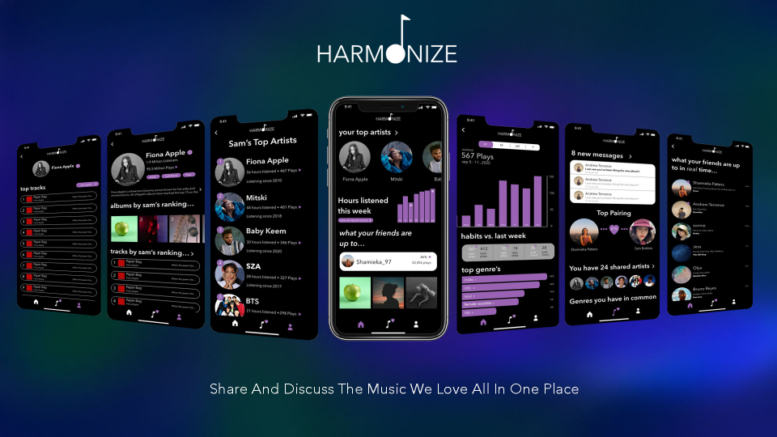
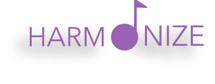
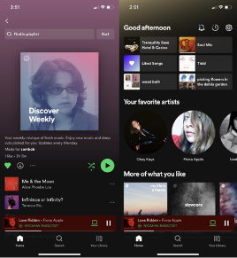
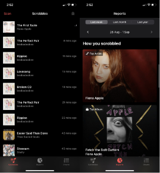
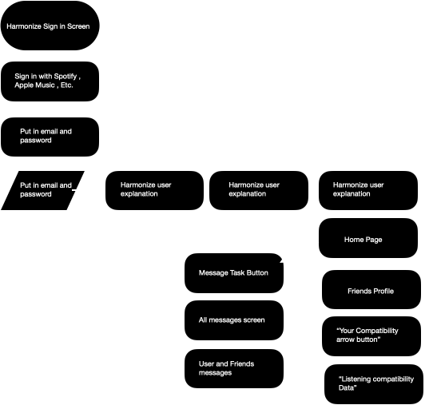
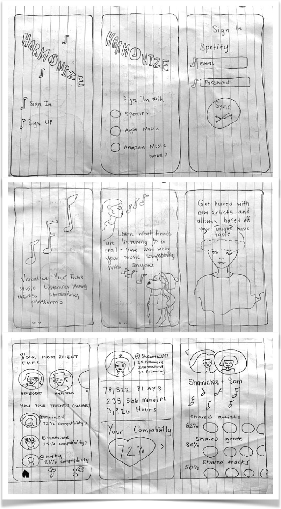
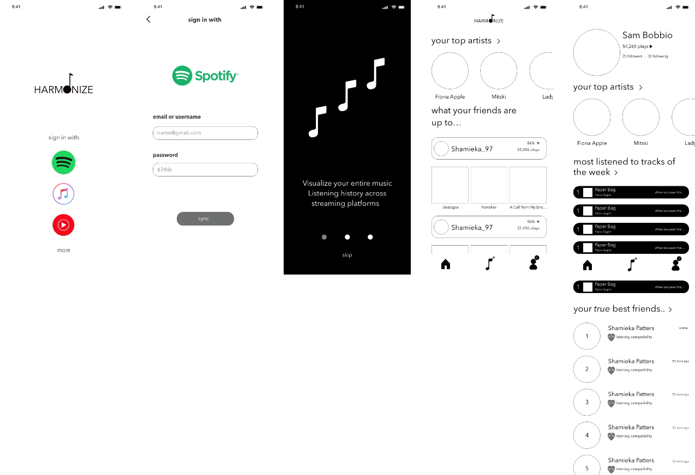

Harmonize
 Why use Harmonize?
To bring listeners of all streaming services to one place where can they can connect to what their friends are listening to as well as view daily reports and analysis of their listening habits.
Curious about your music habits?
Gain access to your unique listening data by syncing your streaming service with Harmonize. View what friends are listening to in real-time across all streaming services along with daily reports based off your listening habits and new artist recommendations. Harmonize will give users a unique music report, daily!
The Bottom Line…
As the feud between streaming services heightens, Harmonize looks to bring listeners together all in one place. Harmonize will allow music lovers a way to view what they are listening too, their favorite genres and realize their music compatibility. In this sharing platform, listeners can connect and discover new music together.
Competitive Analysis
About Spotify
To Spotify is an audio streaming and media service with over 433 million monthly active users making it one of the larger music streaming providers in the industry.
UI/UX Analysis
-The Spotify layout is enticing as it pushes users to interact with new music by always offering up reports of suggested playlists and artists. They’colorful buttons and friendly copy-write pulls users in.
About Last.fm
Last.fm is an app that relies on its a music recommender system called “audioscrobbler”. last.fm creates a detailed profile of each users listening patterns by transferring the information from streaming services and organizing it into reports and summaries for the user.
UI/UX Analysis
Last.fm has a dated design and layout and is hard to navigate.The app is also quite glitchy and slow when it’s loading new listening data. The app is also limited in streaming services that it is able to sync with and cannot be linked with multiple streaming services at one time.
User Flow
Jobs To Be Done
1. When I download the app I want to be guided through making an account and how the app works.
2. When viewing my friends profiles I want to able to see our music compatibility.
3.when using the app I would like to be able to message my friends about music.
Low-Fidelity Wireframes
When sketching Harmonize I wanted the app to have a simple and sleek look. I also wanted the user to be guided through how to use the app in an interesting and visual way.
Mid-Fidelity Wireframes
iOS Final Designs
When settling on a final design I wanted the design to have a dark color palette that would put emphasis on the images, highlighting artists albums / profiles. I chose purple as the brand color as It emulates a cool and edgy feeling.